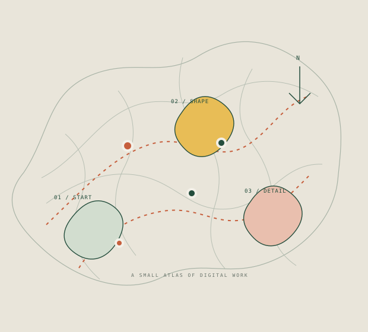

Слушать контекст
Разобраться в задаче, людях и ограничениях до выбора решения.
FRONTEND DEVELOPER · RU / EN
Я Анастасия. Собираю ясные интерфейсы и продумываю детали, которые помогают людям уверенно двигаться по продукту.

N° 0101 / ИЗБРАННЫЕ РАБОТЫ
Небольшая подборка проектов. Роль и контекст указаны прямо — чтобы было понятно, что именно стоит за каждой работой.
02 / РАБОЧИЕ ПРИНЦИПЫ
Разобраться в задаче, людях и ограничениях до выбора решения.
Убрать лишние шаги, назвать вещи привычными словами, показать следующий ход.
Продумать состояния, клавиатурную навигацию и поведение на маленьком экране.
НЕМНОГО ОБО МНЕ
Мне близка frontend-разработка на стыке визуальной культуры и инженерного мышления. В командной работе я предпочитаю ясно обозначать свою зону ответственности и показывать, чему научилась на практике.
GitHub ↗Каждый проект — точка на карте. Важен и маршрут, и то, что он помог понять.
PERSONAL FIELD NOTE / 00104 / CONTACT
Открыта к интересным командам и осмысленным цифровым продуктам.